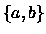
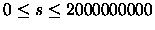

Dr. R. E. Wright's class was studying modified L-Systems. Let us explain necessary details.
As a model let us have words of length n over a two letter alphabet .
The words are cyclic,
this means we can write one word in any of n forms we receive by cyclic shift, whereby the first
and the last letters in the word are considered to be neighbours.
Rewriting rules rewrite a letter at a position i, depending on letters at the positions
i - 2, i, i+1.
We rewrite all letters of the word in one step. When we have a given starting word and a set of
rewriting rules a natural question is: how does the word look after s rewriting steps?
Help Dr. R. E. Wright and write a program which solves this task.
There are several blocks in the input file, each describing one system. There is an integer
number n,
2 < n < 16 the length of the input word in the first line. There is a word in the next
line. The word contains only lowercase letters a and b. There are four characters
c1 c2 c3 c4 in the
next eight lines. Each quadruple represents one rewriting rule with the following meaning: when
the letter at the position i - 2 is c1 and the letter at the position i is c2 and the letter at the position
i + 1 is c3 then the letter at the position i after rewriting will be c4. Rewriting rules are correct and
complete. There is an integer number s,
,
in the last line of the block.
There is one line corresponding to each block of the input file. The line contains a word which
we receive after s rewriting steps from the corresponding starting word using given rewriting rules.
As we mentioned above, the word can be written in any of n cyclic shifted forms. The output file
contains the lexicographically smallest word, assuming that a < b.
5
aaaaa
aaab
aabb
abab
abbb
baab
babb
bbab
bbbb
1
bbbbb